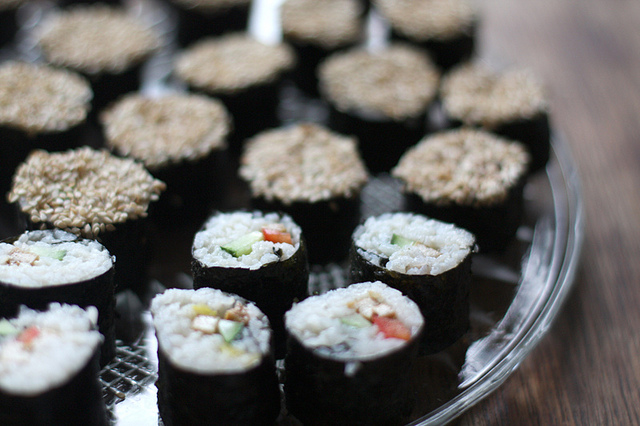

STRUGGLE RECIPES
Maki Rolls

From humble beginnings as a method to method to preserve fish by
coating it in fermented rice, sushi has come a long way. Following an
explosive rise to popularity in the 60's after the spread of the legendary
California Roll, sushi has become a phenomenom wherever it
wasn't popular already. While many cultures have their take on raw fish
(see one of my favorite mexican dishes, ceviche), Japans take is all
its own with a sometimes refined exploration of the sweetness and tenderness
of fresh fish, to at others a shameless exercise in self indulgence.
these days, the sushi most of us are familiar with is what is called a maki
roll in Japan, generally some Nori seaweed, filled with rice and various toppings
and rolled into a convenient package. With easily accessible ingredients
in todays supermarkets, everyone can make this delicious and refreshing
dish at home.
What You'll Need
- Sushi grade rice - 1 c
- Cucumber - 1 small
- Rice wine vinegar - 3 tbsp
- Sugar - 1 tbsp
- Salt - 2 tsp, separated
- Soy sauce (optional
- Pickled ginger (optional
- Nori sheets
- Mayonnaise (optional
- Sriracha (optional
- Water - 2 cups, bowl for cleaning hands
Method
- Combine rice, water, and 1 tsp of salt in heavy bottom pot and bring to a simmer
- Place lid on pot and allow to simmer 17 minutes, then remove from heat and let sit 10 minutes
- Slice cucumber into long julienne strips while the rice cooks
- Combine mayo and srirachi 50/50 in a small bowl
- After 10 minutes have elapsed, fluff rice with fork and scoop into large bowl
- Combine vinegar, sugar, and remaining salt, then drizzle onto the now cooling rice
- Use a rice paddle to cool and mix the rice until vinegar mixture is distributed
- Wet a kitchen towel and place it on the directly on the counter
- Place a sheet of nori shiny side down on the towel, and add plae a small handful of rice on the sheet
- Use your fingers to gently spread and even out the rice, leaving a small strip of nori on the end
- Add your cucumber about one inch from the side of the sheet, lengthwise in a straight line opposite your strip of bare nori
- Lift the edge of the towel, lifting the edge of the nori up, pulling it over to enclose the cucumber in rice
- Continue to roll until the bare nori closes, enclosing a tube of sushi
- Rinse a sharp knife under the sink, transfer your roll to a cutting board, and cut into one inch bites
- If desired, drizzle spicy mayo on top, and dip (sparingly) in soy sauce. Enjoy!